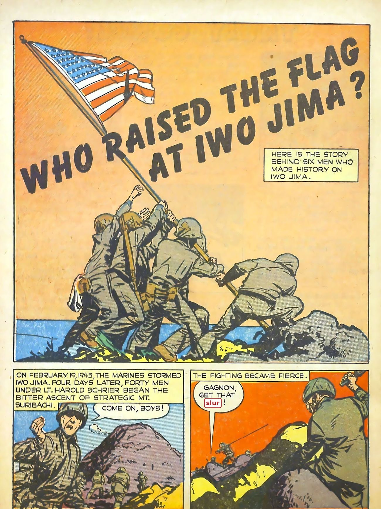

You're the fact-checker. For each part: read the page on the left → get the check right → write 1–2 sentences. Done = 4 green checks + 4 answers, then turn in at the bottom.
Content note: Battles, deaths, and the atomic bomb. These old comics used a hateful slur for Japanese people. We covered it with a slur tag.
Word help (tap to open)
- Iwo Jima, Okinawa = small islands near Japan the U.S. fought to take
- Marines = troops who attack from ships onto land
- Diverse ancestry = families from many different places
- Kamikaze = Japanese suicide pilots
- Destroyer = small, fast warship
- Classified = kept secret by the government
- Civilians = people who are not soldiers
- Soviet Union = Russia-led country, a U.S. ally in WWII
- Surrender = give up and stop fighting

Click the page to make it bigger.
Turn in your work
Your work saves on this device, so you can come back later. Your teacher sees it after you turn it in.
Comics: "Who Raised the Flag at Iwo Jima?" and "Name to Remember," True Comics #46 (Winter 1945), Parents' Magazine Press; "The Bomb That Won the War," art by Rudy Palais, Science Comics #1 (Jan. 1946), Humor Publications. Public-domain scans from the ComicBook Experience reading library; the watermark strip was trimmed. Photo: Navajo code talkers on Bougainville, December 1943, U.S. Marine Corps (National Archives).